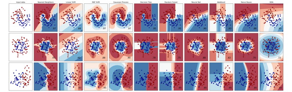
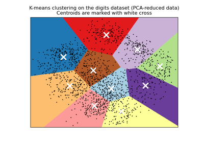
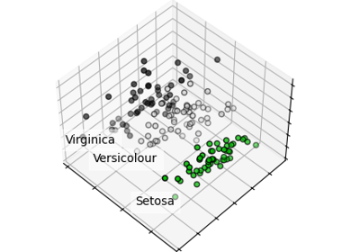

introduction-to-machine-learning#
机器学习入门
使用scikit-learn等介绍机器学习原理。
在线地址：https://tianxuzhang.github.io/introduction-to-machine-learning/README.html
内容包含以下部分
分类#
确定对象所属的类别。
应用：垃圾邮件检测，图像识别。
算法：梯度提升、最近邻、随机森林、逻辑回归等等。

回归#
预测与对象相关的连续值的属性。
应用：药物反应、股票价格。
算法：梯度提升、最近邻、随机森林、岭回归等等。

本章内容包含：
聚类#
将相似对象自动分组到集合中。
应用：用户划分、实验输出分组。
算法：k-means、DBSCAN、层次聚类等等。

降维#
减少要考虑的随机变量的数量。
应用：可视化、提高效率。
算法：PCA、特征选择、非负矩阵分解等等。

模型选择#
比较、验证和选择参数以及模型。
应用：垃圾邮件检测，图像识别。
算法：网格搜索、交叉检验等等。

预处理#
确定对象所属的类别。
应用：转换输入数据如文本，便于机器学习算法使用。
算法：预处理、特征提取等等。

数学符号和读法#
希腊字母读法
\(Α\) \(α\) [alpha] 阿尔法
\(Β\) \(β\) [beta] 贝塔
\(Γ\) \(γ\) [gamma] 伽马
\(Δ\) \(δ\) [delta] 德尔塔
\(Ε\) \(ε\) [epsilon] 艾普西隆
\(Ζ\) \(ζ\) [zeta] 截塔
\(Η\) \(η\) [eta] 艾塔
\(Θ\) \(θ\) [sita] 西塔
\(Ι\) \(ι\) [iota] 约塔
\(Κ\) \(κ\) [kappa] 卡帕
\(Λ\) \(λ\) [lambda] 兰布达
\(Μ\) \(μ\) [mu] 缪
\(Ν\) \(ν\) [nu] 纽
\(Ξ\) \(ξ\) [xi] 柯西
\(Ο\) \(ο\) [omicron] 奥密克戎
\(Π\) \(π\) [pi] 派
\(Ρ\) \(ρ\) [rho] 柔
\(Σ\) \(σ\) \(ς\) [sigma] 西格玛
\(Τ\) \(τ\) [tau] 套
\(Y\) \(υ\) [upsilon] 衣普西隆
\(Φ\) \(φ\) [phi] 佛爱
\(Χ\) \(χ\) [chi] 西
\(Ψ\) \(ψ\) [psi] 普西
\(Ω\) \(ω\) [omega] 欧米伽